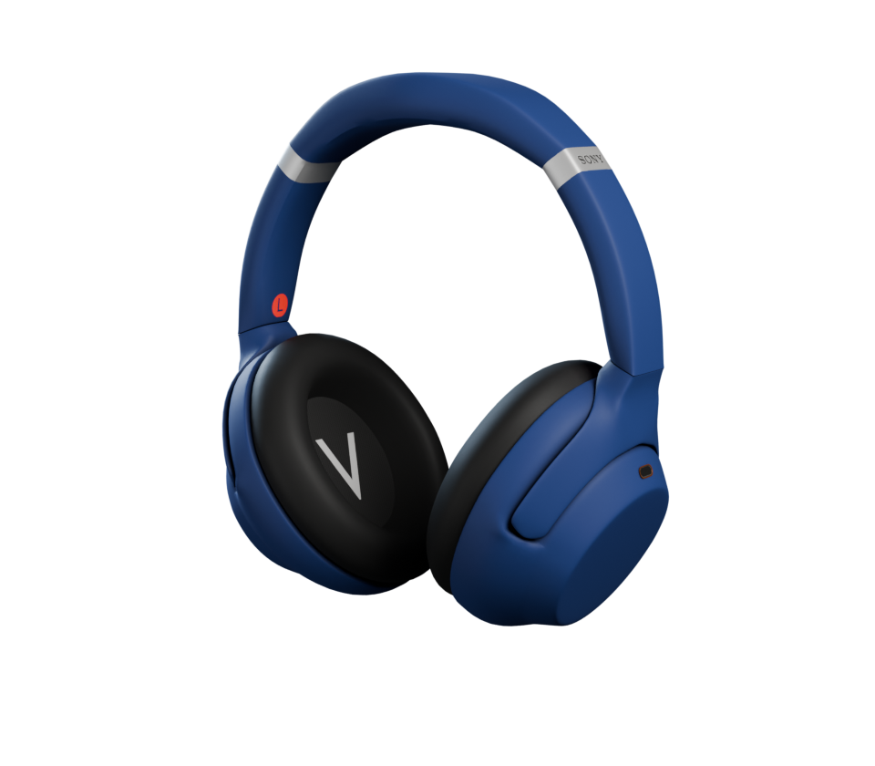

Glisser pour tourner · double-clic pour revenir
Mode actuel
—
Son ambiant
1–20Réglable en mode Son ambiant
Son
Son ambiant
Niveau du son ambiant
/ 20Quantité de son extérieur laissée passer, en mode Son ambiant.
Voix en avant
Laisse passer les voix en atténuant les autres bruits.
Optimiseur de réduction de bruit
Adapte la réduction de bruit à votre tête, vos lunettes et à la pression atmosphérique (avion). Portez le casque et restez immobile une quinzaine de secondes.
Micro du casque
Coupé, le casque reste en stéréo haute qualité : Windows ne le bascule plus en mode « téléphone » quand une appli ouvre le micro (Teams, Discord…), mais son micro n'est plus utilisable.
Son
Égaliseur
Faites glisser les points ou utilisez la molette. Toucher aux bandes passe en préréglage Manuel, comme dans l'appli Sony.
Réglages
Casque
Appareil
Batterie
Codec
Firmware
DSEE Extreme
Restaure les détails perdus par la compression de la musique.
Speak-to-Chat
Met la musique en pause et laisse passer le son quand vous parlez.
Sensibilité de détection de la voix
Élevée : réagit même quand vous parlez doucement.
Fin du mode conversation
Délai sans parole avant que la musique reprenne.
Focus sur la voix pendant la conversation
Met en avant les voix dans le son ambiant laissé passer.
Pause au retrait du casque
Met la lecture en pause quand vous enlevez le casque.
Extinction automatique
Le casque s'éteint tout seul quand vous ne le portez plus.
Pavé tactile
Commandes tactiles sur l'écouteur droit.
Guide vocal
Annonces vocales du casque (connexion, batterie, mode…).
Réglages
Application
Lancer au démarrage de Windows
L'appli démarre dans la zone de notification, sans fenêtre.
Raccourci clavier Ctrl + Alt + N
Depuis n'importe quelle appli : réduction de bruit → son ambiant → désactivé.
Alerte batterie faible
Notification Windows quand la batterie du casque passe sous 20 %.
À propos
XM4 Control
Contrôle du Sony WH-1000XM4 sous Windows, sans l'appli mobile. Logiciel libre sous licence MIT, non affilié à Sony.
Modèle 3D du casque
Casque 3D de l'accueil tiré du modèle « SONY headphone WH-1000XM4 » de Chizuko V, sous licence CC BY 4.0.